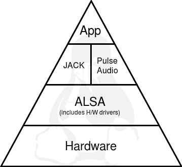
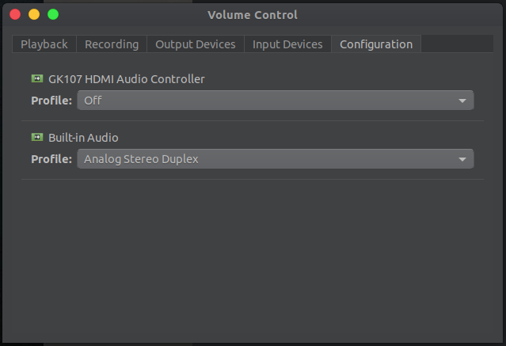

Audio
For audio file editing see ffmpeg.
Linux audio stack (Linux audio framework)
Professional vs amateur
Professionals want audio framework to provide:
- Low latency;
- Bit-perfect (accurate) playback;
These things are not default in Linux and require some efforts. If we take a popular Linux distro, the typical out-of-the-box config is usually O.K. for those who just wants to listen MP3, watch movies, play games. Seriously, why to stress a regular user with the latency problems if he's not going to use a MIDI keyboard or perform high quality audio recording?
ALSA
(Advanced Linux Sound Architecture) is a Linux kernel component providing device drivers and low-level support for audio hardware.
Technically, ALSA is a set of kernel modules, so you don't have to install it specifically. However, you may want to install alsa-utils pkg including:
alsamixer
amixer
aplay
aplaymidi
speaker-test
ALSA settings are stored in
/var/lib/alsa/asound.state.
Usually your soundcard is hw:0, unless you have more then one. Many audio apps try to use hw:0 by default. If app fails, may be you should specify the device explicitly. To find audio device names:
cat /proc/asound/cards
There may be multiple devices per card, so names like hw:0,2 are normal. In fact, the general form is:
hw:card,device,subdevice
If you omit device or subdevice, it's supposed to be 0. You can get some useful info with the following cmd:
aplay -l
To test audio you need some good .wav file:
aplay -D hw:0 snd_test_01.wav
If this fails with some error (e.g., "Device or resource busy"),
it's possible that soundcard is monopolized by PulseAudio.
You can suspend / unsuspend PulseAudio using
pacmd or you can exclude
this soundcard from PulseAudio config (see prev chapter). Remember that
both methods may have side effects!
Here is an example with MPlayer bypassing PulseAudio and sending output directly to ALSA device:
mplayer -ao alsa:device=hw1.0 song022.mp3
Note that ALSA device is hw1.0 which is probably second soundcard.
You can reload ALSA layer with the following cmd:
sudo alsa force-reload
After this, to return to the shell prompt, press CTRL+C. To restart the whole sound service:
pulseaudio -k && sudo alsa force-reload
Sometimes, to clean errors, messed config, etc, you have to re-install the basic sound software:
sudo apt remove alsa-base pulseaudio
sudo apt install alsa-base pulseaudio
But do not overuse it! Good knowledge and experience will help you to solve problems without such drastic measures.
Playing audio files with cmdline apps
Some popular cmdline apps you may want to install to play or process audio:
mpg123 |
MP3 audio player; free / LGPL 2.1; |
mpg321 |
MP3 audio player; it was created as
replacement for mpg123 when the last was not free; |
mplayer |
powerful audio/video player; can be used as cmdline tool or with GUI (MP3, WAV, OGG, MP4, AVI, FLV, VOB, etc); |
ogg123 |
Ogg Vorbis audio player; |
lame |
MP3 encoder; |
cdparanoia |
Audio CD ripper; |
Usage examples:
mpg123 flute.mp3
mpg123 -o pulse flute.mp3
mpg123 -o alsa flute.mp3
mpg123 -o alsa -a hw:1.0 flute.mp3
mpg123 -o alsa09 flute.mp3
mpg123 --gain 25 -o alsa09 flute.mp3
The first cmd uses a default output device. The last cmd plays with lower volume (25%). You can use these cmds in scripts (e.g., to produce warning sounds) or with cron to simulate an alarm clock (redirect stdout to /dev/null to suppress screen msgs):
mpg123 warn01.mp3 1> /dev/null 2> /dev/null
Cutting a fragment from MP3 file:
mpg123 -v --skip 11720
--frames 19760 --wav solo.wav CrazyDiamond.mp3
This cmd plays a fragment of the specified MP3 file and writes it to solo.wav file.
Some options:
-a devname
audio output device name (for ALSA it's like hw:0,0);
-g n, --gain n
set volume (gain); the range is 1..100;
-o devtype
output device (alsa, oss, pulse, ...);
--skip n
start playing at frame n+1;
--frames m
stop playing at frame m;
--wav file
save decoded data to a specified WAV file;
MPlayer is usually considered as a video player, but it is good for audio too.
mplayer -volume 50 Good_song_1.wav
mplayer -af volume=-12 Good_song_2.wav
First cmd sets volume to 50% of master volume, second cmd decreases volume by 12dB. MPlayer has a rich set of keyboard cmds.
PulseAudio sound server
Currently (2019) PulseAudio is a std Linux sound server functioning as a proxy for sound apps. That is, when an app wants to make some sound, it asks PulseAudio - the legal representative of Linux sound system. The problem with PulseAudio is that it violates the "bit-perfect" principle, e.g., resamples, mixes sounds, etc.
Experts advice to have a separate soundcard for music (preferably an external USB soundcard) and configure your music player to send audio directly to ALSA (i.e., bypass PulseAudio). Some PulseAudio cmds:
pulseaudio -h
pulseaudio --help
pulseaudio --version
pulseaudio --check
returns 0 if PulseAudio daemon is already running for the calling user; non-zero otherwise;
pulseaudio -k
kill PulseAudio daemon of the calling user (--kill);
pulseaudio --start
start PulseAudio as a daemon;
The main user tool for PulseAudio is a GUI app pavucontrol - Pulse Audio Volume Control. It looks like this:

There are also pacmd,
a live shell to the PulseAudio sound server, and
pactl (a simplified non-interactive version of the prev)
supposed to be used to issue control cmds to PA. For example:
pactl info
shows the most basic info about PulseAudio server;
pactl stat
shows simple stat about PulseAudio memory usage;
pactl list short
displays all currently loaded modules, available sinks, sources, streams, etc (even with "short" this list is actually quite long);
pactl exit
signals PA daemon to terminate;
Other typical cmds:
pactl move-sink-input 16 '1'
pactl set-sink-input-volume '16' 30%
pactl suspend-sink '1'
PulseAudio config files:
~/.config/pulse/daemon.conf
/etc/pulse/daemon.conf
daemon settings; user's config file has precedence over system-wide (global);
~/.config/pulse/default.pa
/etc/pulse/default.pa
default config script that executes when daemon starts;
~/.config/pulse/client.conf
/etc/pulse/client.conf
settings for PulseAudio client apps;
Excluding external USB soundcard from PulseAudio config
Stopping/killing/removing PulseAudio server is a bad idea, unless you are an expert with special demands. In most cases PulseAudio and average level soundcard (e.g., built-in soundcard) make a good couple. However, high quality external USB soundcard deserves to be excluded from this union.
There is a way to tell PulseAudio to ignore a specific device.
Note!
To perform the following procedure you need root privs
(see sudo).
First find device IDs:
lsusb
lsusb -v -sbus_no:dev_no
Look for idVendor and idProduct.
Now check /lib/udev/rules.d/ just to be sure there is PulseAudio rules file:
/lib/udev/rules.d/90-pulseaudio.rules
but there is no files with name like 89-xxxxx.
Do not touch anything in this dir [!]
because your specific config file must be created in other place: cd /etc/udev/rules.d > 89-pulseaudio-usb.rules
The last cmd creates an empty file
/etc/udev/rules.d/89-pulseaudio-usb.rules. Open this file and
insert a line like following:
(you should use idVendor & idProduct
of your device)
Restart system.
Insert an Audio CD and run
n - track number; the default output filename cdparanoia 2 extracts the track # 2 and saves to cdparanoia 5 LivingNextDoorToA.wav extracts the track # 5 and saves to
You can use
The joint stereo (jstereo) mode (
The
The CBR (constant bitrate encoding) mode is default,
For MPEG-2
Default is 128 for MPEG1 and 64 for MPEG2.
The
The lame song01.wav song01.mp3 convert WAV to MP3 using constant bit rate (CBR) encoding,
bitrate 128 kbps, average quality, jstereo mode (joint stereo); lame -h song02.wav song02.mp3 convert using CBR encoding, 128 kbps, high quality,
jstereo mode; lame -b 192 -h song03.wav song03.mp3 CBR encoding, 192 kbps, high quality, stereo; lame -m m song04.wav song04.mp3 CBR encoding, 128 kbps, average quality, mono sound; lame -h --abr 192 song05.wav song05.mp3 convert using variable bit rate encoding (ABR type), 192 kbps
(average bit rate), high quality; lame -V2 song06.wav song06.mp3 convert using variable bit rate encoding (VBR type), very high
quality (~ 200 kbps);
ATTRS{idVendor}=="041e", ATTRS{idProduct}=="3f19", ENV{PULSE_IGNORE}="1"
Audio CD ripping
cdparanoia.
It reads the specified track, converts it to a wav,
and saves this file to the current dir:cdparanoia n [fname]cdda.wav:cdda.wav;LivingNextDoorToA.wav;
Converting WAV to MP3
lame to convert wav files to
mp3. The syntax is:lame [options] inpfile [outfile]-m j) implies the use
of some tricks that allow to increase the bandwidth. It's default for CBR
with bitrates <= 160 kbps, and for VBR with -V5
or more. Other modes are: s (simple stereo), m
(mono), f (forced MS stereo), d (dual mono),
l (left channel only), r (right channel only).-h (high quality) option forces the internal algorithm
quality setting -qn, where n lies within
the range 0..9 (speed/quality ratio: from slow/high quality
to fast/low quality). In practice, 0 and 1 do
not provide essential quality improvements, so -h is equivalent
to -q 2 (which is recommended). The option -f (fast)
is equivalent to -q 7.-b sets the
bitrate, but the values are limited to the predefined sets. For MPEG-1: 32, 40, 48, 56, 64, 80, 96, 112,
128, 160, 192, 224, 256, 320 8, 16, 24, 32, 40, 48, 56, 64,
80, 96, 112, 128, 144, 160-v option turns on VBR (variable bitrate encoding),
--abr defines the targeted average bit rate.-V enables VBR and specifies the value of VBR quality
from 0 (the highest quality) to 9 (the lowest),
default is 4 (reasonably high quality).